GOURMET
水戸は納豆が名物として知られているほか、
「常陸牛」「奥久慈しゃも」と
いった茨城の美味しいものが集まると評判です。
水戸のおすすめグルメを3つ紹介します。
水戸市へと観光などで来た際に
食べに出かけてみてください。
水戸市にあるお洒落な
イタリアンレストラン
-
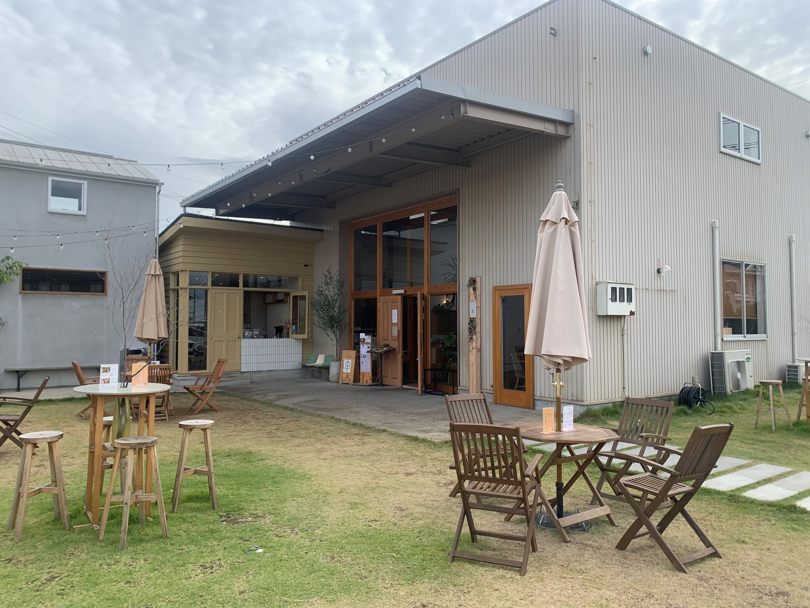
il.イルドット
６つのショップがある複合施設
「TRANSIT FOLKS」の中にある
レストラン。
木を基調とし素材を活かした店内は、
温かみのある空間があります。
全ての席ごとに仕切りがあり、半個室の
ように利用ができます。
女子会や特別な日や記念日におすすめの
コース料理まで、いろんな用途に使ます。
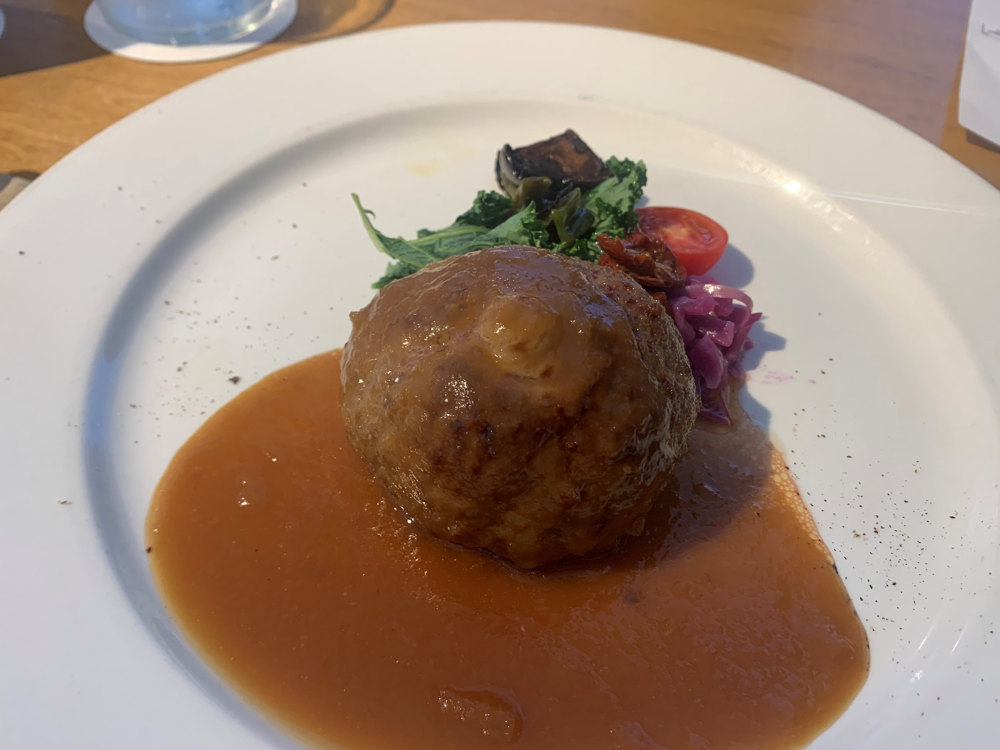
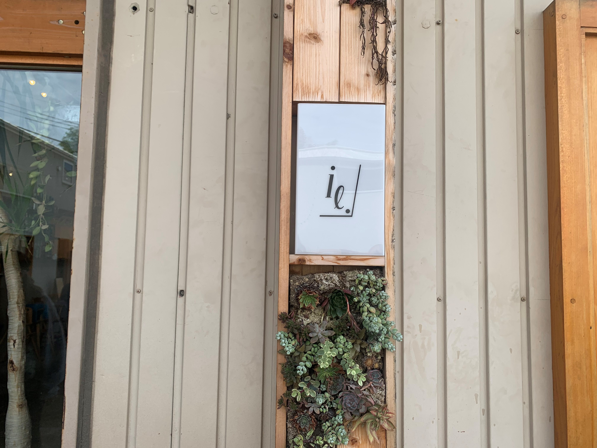
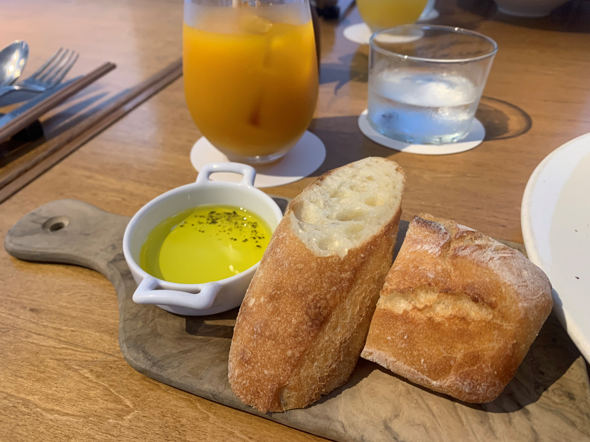
水戸市の隠れ家カフェ。
手ごねハンバーグ、ふわふわなパンケーキ。
-
Cafe Cocca
ご夫婦が経営するカフェのコンセプトは
”笑顔つながるHappyカフェ”。
ふわふわで絶品の幸せになれるパンケーキ
が味わえます。
カフェメニューには茨城産、地元水戸で
採れた食材を使用しているのも特徴です。>
デザートだけでなくランチもおいしい、
水戸でおすすめのカフェです。
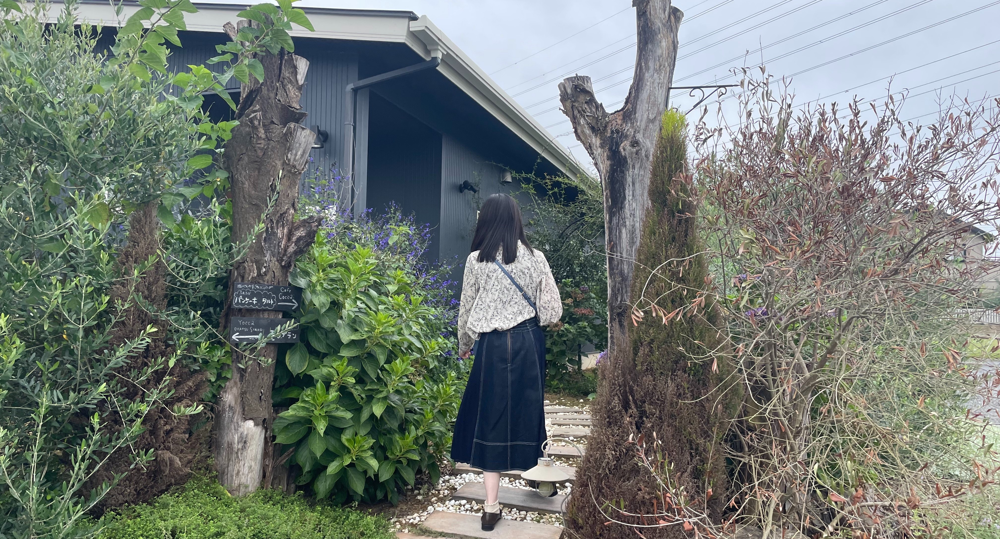
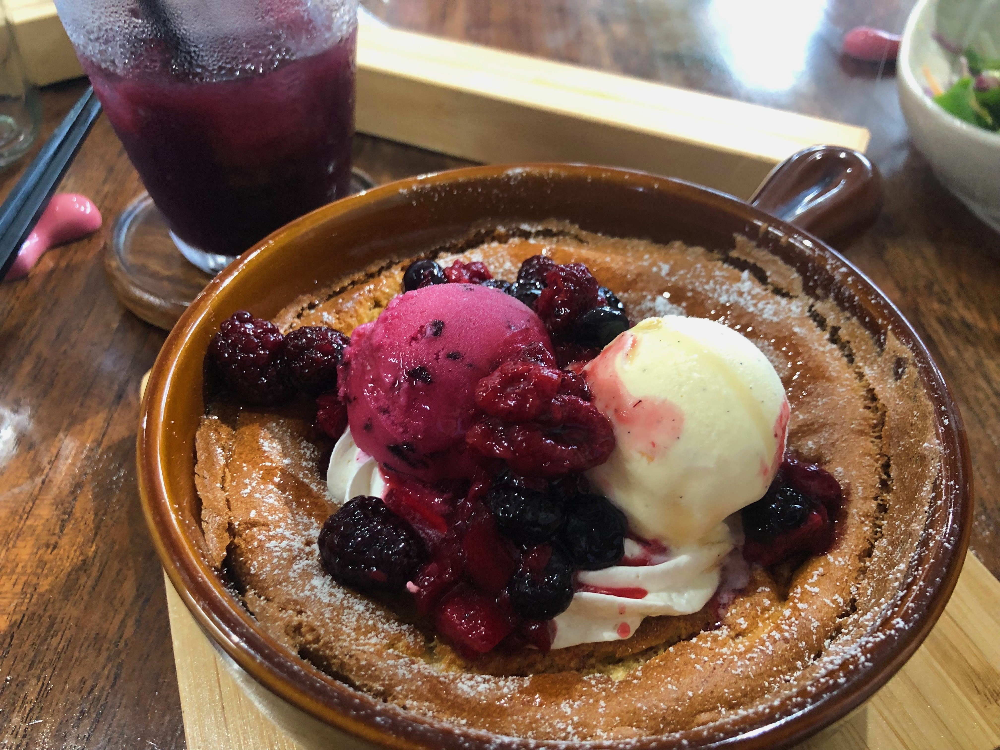
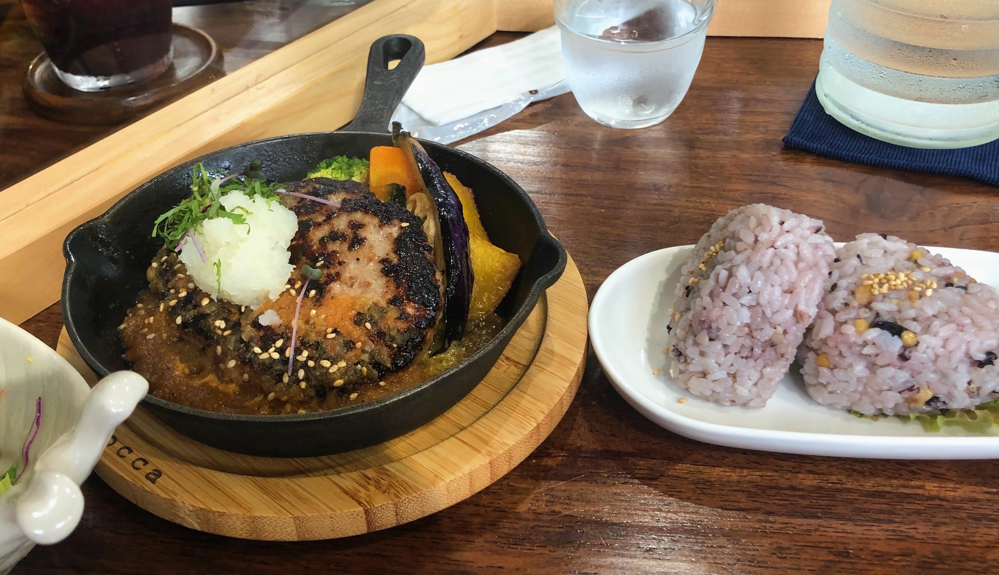
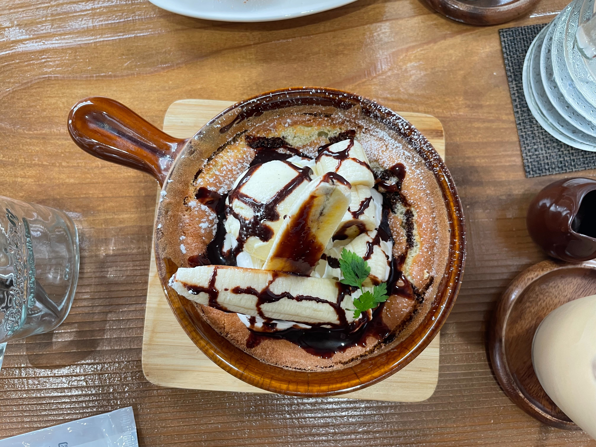
千波湖を一望できる
全面ガラス張りのカフェ。
-
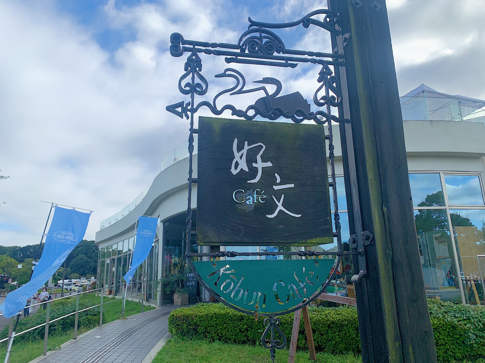
好文Cafe
全面ガラス張りの開放感のある店内から
千波湖を眺めながら、 一息つく場所としておすすめです。
千波湖の白鳥をモチーフにした
「白鳥シュークリーム」は,
生地やカスタードクリームに
奥久慈卵」がたっぷり使われています。
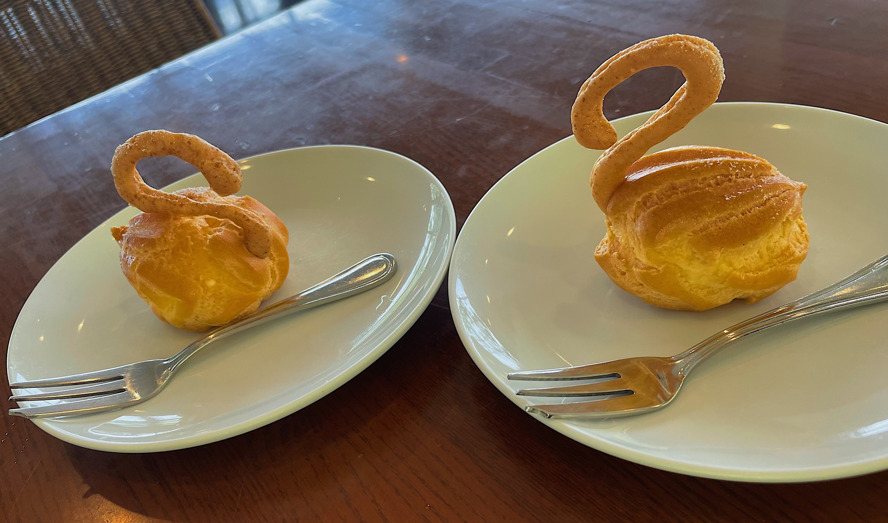
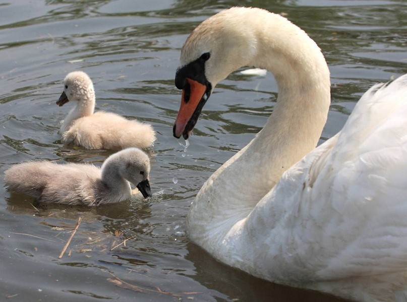